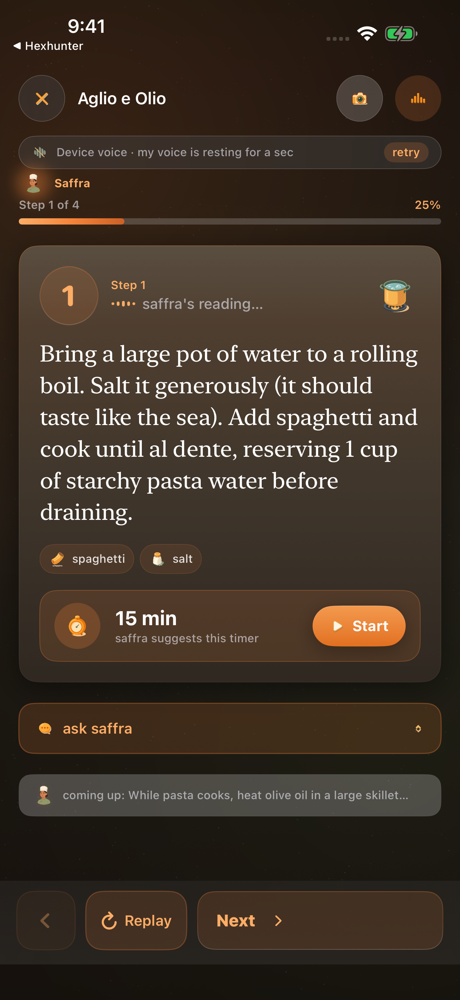
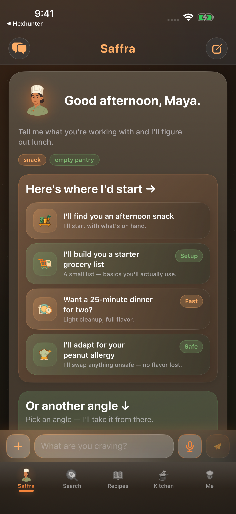
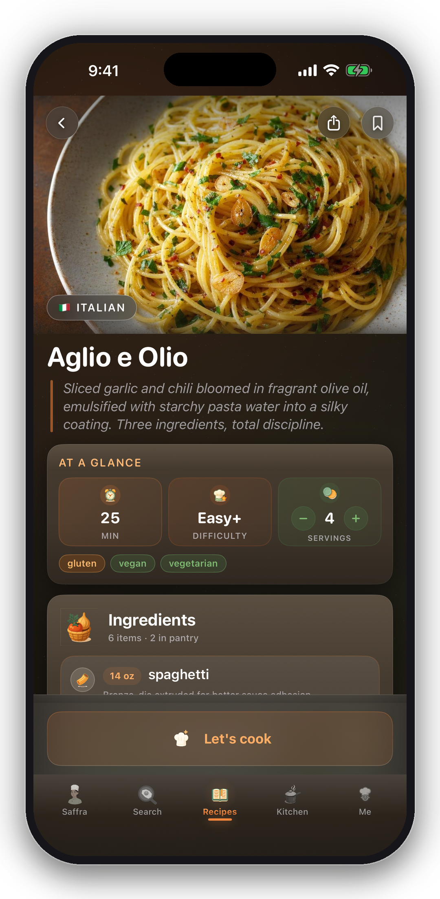
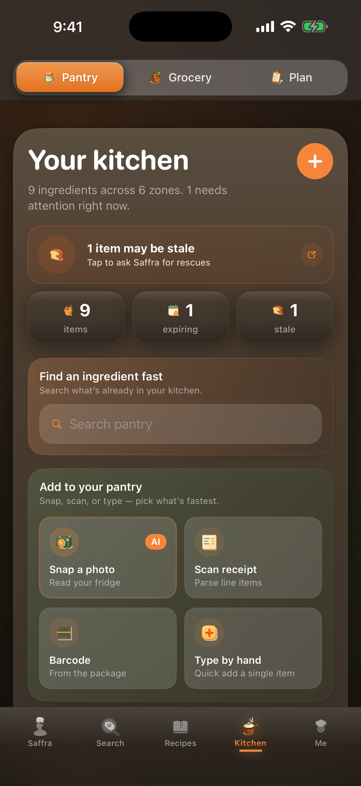

Premium recipes you can trust — every one vetted by a trained chef-panel, then rewritten for your pantry, your allergies, and the time you've got. Plus voice-first cooking when your hands are full of dough.


Every other recipe source has a single point of failure. Cookbook recipes carry one author's bias. AI-generated recipes carry one model's hallucinations. Saffra's catalog is panel-vetted — three chef-trained perspectives have to agree before a recipe ships, and then she rewrites it for you.
She checks what you have before suggesting anything. If the cilantro's going yellow, that's tonight's dinner.
Messy hands? Say "hey saffra, next step" and she narrates. Set timers by voice — they live in the Dynamic Island.
Every recipe is rewritten for your pantry, equipment, allergies, and skill level. Beginners get sensory cues. Pros get the chef move.
Declared allergies are non-negotiable. She'll swap loud and clear, or pass on a recipe entirely — never quietly proceed.
Four screens, one chef. Built for the way you actually cook — pantry-aware, hands-free, recipe-grounded.
Time-of-day greeting, live pantry pills, four contextual quick-starts.

Pantry-aware ingredients, at-a-glance timing, diet tags — then one tap into hands-free Cooking Mode.
Hands-free narration. Voice timers in the Dynamic Island. "Hey saffra, next step."

Track what you have. Items going off get flagged for tonight's dinner.
Generic "AI cooking" tools paste a recipe into a chatbot and call it a day. Every layer of Saffra is built for cooking specifically — with knowledge, memory, and rules a general-purpose AI doesn't have.
Powered by advanced AI — shaped into a real chef. Saffra has a name, a voice, signature moves, and hard safety rules. Her tone calibrates to your skill: beginners get sensory cues ("when oil shimmers, when it smells nutty"), pros get terse technique-first ("hit it with a nappé"). One model, infinite cooks.
Every flagship recipe Saffra knows passed a trained chef-panel before it shipped. Three chef-trained perspectives review each dish — research, debate, common-mistake review — and only the version they all agree on reaches you. Saffra's catalog: 915+ panel-vetted flagship recipes across 25+ cuisines, plus a 230,000-recipe semantic search index for breadth (vector embeddings). You get the version that survived disagreement, not a hallucinated one. Then she adapts it to your pantry, your skill, your equipment.
Rolling conversation summaries. Cook history with star ratings. Live pantry awareness. Recent-suggestion tracking so she doesn't pitch the same dish twice. The longer you cook with her, the sharper she gets — leaning into what you loved, steering around what flopped, varying within genres you've succeeded at, never repeating last Tuesday's dinner unless you ask.
Saffra doesn't just talk — she works. She has nine purpose-built tools: pantry search, recipe lookup, recipe adaptation, ingredient substitution, technique explainer, voice timers, unit conversion, recipe saving, profile updates. She picks the right tools for each turn and chains them — "what's for dinner?" might fire pantry-search → recipe-lookup → adapt-for-user, all silently before answering.
Declared allergies are non-negotiable — hard refusal rules, not soft suggestions. She'll either swap loud and clear or pass on the recipe entirely. Cross-contamination flags for serious allergies (peanut, tree nut, shellfish, sesame, gluten-for-celiac). USDA-safe internal temperatures cited in every recipe that needs one.
Streaming neural TTS — Saffra's signature voice — served from a content-addressed cache so the same line never re-renders twice. Speech recognition runs on-device via Apple's Speech framework — your voice never leaves the phone unless on-device accuracy fails. The wake phrase "hey saffra" is only armed inside Cooking Mode, never app-wide. Voice timers land in Live Activities, including the Dynamic Island.
Each feature exists for one reason: get you from "what should I cook" to dinner on the plate.
She suggests recipes that use what you already have. Items going off get used first. Less waste, fewer trips.
"Hey saffra, next step." She listens the whole time you're cooking. Voice timers land in the Dynamic Island.
Every recipe rewritten for your pantry, equipment, allergies, and skill — beginners get sensory cues, pros get the chef move.
Paste a URL, snap a cookbook page — Saffra imports it and adapts it for you. Build a personal library that learns your taste.
Scan groceries straight into your pantry — items land with categories, expiration dates, and allergen flags pre-filled.
Declared allergies are non-negotiable. She swaps loud and clear, or passes on the recipe — never quietly proceeds.
Tell her your level once. Beginners get every technique explained with sensory cues. Pros get terse, technique-first direction.
"Set rice for eighteen minutes." It's running. Multiple timers track on Lock Screen and Dynamic Island so you don't miss a beat.
One-minute conversational onboarding. Diet, allergies, equipment, skill, the cuisines you love.
She pulls from a panel-vetted catalog, checks your pantry and your time, and names the dish — confidently, adapted to you.
Voice-first Cooking Mode reads you each step. Set timers by voice. Ask "why does this matter?" any time.
Rate the result. She remembers. Future suggestions lean into what worked, and quietly skip what didn't.
Start free. Upgrade when you're ready to cook with her every day.
Try the chef
For everyday cooks
Pay once. Yours forever.
Three big differences. One: ChatGPT improvises every recipe — it can hallucinate temperatures, miss steps, or confidently invent techniques that don't work. Saffra's flagship recipes are panel-vetted — a trained chef-panel of three chef-trained perspectives reviews each dish, debates the technique, and only ships the version they all agree on. Two: recipe sites don't know what's in your fridge or what you can't eat. Saffra calls a pantry tool before every suggestion, treats declared allergies as hard refusal rules (not soft hints), and rewrites every recipe for what you actually have. Three: she has an explicit chef persona — safety rules, tone calibration by skill level, signature behaviors — and a hands-free voice mode for when your hands are full of dough.
The brain is a state-of-the-art multimodal AI model, with a faster utility model for simple tasks (parsing receipts, folding old conversations into summaries). Recipe search runs on vector embeddings over our curated library. Voice synthesis is a neural TTS voice — Saffra's signature — content-addressed cached so the same line never renders twice. Speech recognition runs on-device via Apple's Speech framework. Image OCR for receipts and cookbook pages also runs on-device, via Apple's Vision framework — your photos never leave your phone. The recipe catalog itself is panel-vetted by a multi-perspective chef pipeline before anything reaches the app.
Two things keep her grounded. One: when you ask for a specific dish or "what should I cook?", she calls a tool that searches our curated recipe library — hand-curated flagship recipes plus 230,000 CC0-licensed recipes — instead of improvising one from memory. So you get a real recipe, adapted for you, not a hallucination. Two: for techniques and substitutions she calls dedicated tools (technique explainer, substitution lookup) rather than guessing. She also won't claim to have personally tasted something — she'll say "by the numbers, this should read bright and savory" instead of "I love this." If she's not sure, she says so.
Anything. Any cuisine — Thai, Mexican regional (Oaxacan vs. Yucatecan vs. Norteño), Korean, Vietnamese, French classical to bistro, Sicilian vs. Emilia-Romagna vs. Roman Italian, Chinese regional (Sichuan, Cantonese, Hunan), West African, Levantine, Peruvian. Cuisines outside our named list get the same regional-and-technique-first reasoning, never a generic "Asian" answer. Any dietary world — vegan, keto, halal, kosher, FODMAP, Whole30, celiac (with cross-contamination awareness). Any skill — from someone who's never cooked chicken (sensory cues, every technique explained) to a sous-vide-plating home cook (terse, technique-first). Any kitchen — induction-only, no oven, cast iron only, full restaurant brigade. She calibrates to you.
Yes. Conversations are persisted, your pantry is tracked, and recipes you rate 4-5 stars influence future suggestions. After about 24 turns the older messages fold into a compact summary so context stays sharp without bloating. She knows what you've cooked recently (and won't repeat last Tuesday's dinner unless you ask), what you've loved, and what fell flat. She'll weight suggestions toward your wins, vary within genres you've succeeded at, and treat anything she's already pitched in this thread as off the table.
You tell her — but quickly. Snap a grocery receipt and on-device OCR extracts the lines, then a lightweight AI model parses them into clean line items (your photo never leaves the phone). Or scan a barcode — the lookup runs against Open Food Facts and items land in your pantry pre-tagged with category, expiration, and allergen flags. Or just type things in. As you cook, she tracks what's used and what's running low. Items going off ("the cilantro's gone yellow") get surfaced for tonight's dinner instead of going in the trash.
Never. Text-mode chat is the default and works exactly the same. Voice mode is for when your hands are deep in dough or holding a knife. Toggle it per-session in Settings, or open Cooking Mode for full hands-free narration with the wake phrase "hey saffra" — note that the wake phrase is only armed inside Cooking Mode, never app-wide, so the mic isn't listening when you're not cooking. Voice timers fire silently and land in Live Activities (Lock Screen + Dynamic Island). Free tier is text-only; Pro unlocks voice cooking.
Allergens are non-negotiable. Once you declare one in your profile, she will either substitute the offending ingredient (loud and clear, named in the response) or refuse the recipe entirely and offer a genuinely good alternative — never quietly proceed. For serious allergies (peanut, tree nut, shellfish, sesame, gluten-for-celiac) she also flags cross-contamination risks in shared oils, fryers, cutting boards. Adapted recipes carry a persistent allergen disclaimer banner in-app. USDA-safe internal temperatures appear in every recipe that needs them — chicken at 165°F, ground beef 160°F, salmon 125-130°F. That said: Saffra is an AI. She's very capable but always verify allergens and cooking temperatures yourself, and she's not a substitute for medical or dietary advice.
Yes. Free gives you 10 chef messages a day, full recipe-library browse, 1 recipe adaptation to feel the magic, pantry tracking, and every safety guardrail. Pro adds the things you'd reach for daily — unlimited chat, voice cooking with Saffra's signature Nova voice, every recipe rewritten for your kitchen, receipt & barcode scanning, recipe import from URLs and cookbook photos, and a personal library that learns your taste over time.
Most "AI cooking" apps generate recipes on the fly — one model, one pass, no review. The result is the AI-slop you've seen in the news: charcoal Christmas cakes, hollandaise hallucinations, recipes that assume you have ingredients you don't. Saffra works differently. Her flagship catalog is panel-vetted: every recipe goes through a trained chef-panel of three chef-trained perspectives. They research the dish from many sources, debate the technique, identify common mistakes, and only ship the version they all agree on. What you cook is the recipe that survived three independent perspectives — which is why it's more likely to actually work the first time, taste authentic, and not be missing critical detail. Then Saffra adapts that vetted recipe to your kitchen.
We're heading into TestFlight beta now. Sign up for early access above and you'll be among the first cooks invited in. iOS first; other platforms come after we've nailed the iPhone experience. We're going for "actually delightful," not "ship it now and patch later."
Sign in with Apple. We never sell data. We never use your conversations to train models. We never track you across apps or websites. Voice transcription runs on-device by default — only the text reaches our server, never the audio. Receipt and cookbook photos run through Apple's Vision framework on your phone — only the extracted text leaves the device. You can delete your account and every byte of your data from Profile / Me at any time. Full policy at /privacy.
Premium recipes, panel-vetted. Adapted to your kitchen. Cooked with you, hands-free. Get notified the moment we open TestFlight. iOS first.
iOS. No spam. We'll notify you the moment beta opens.